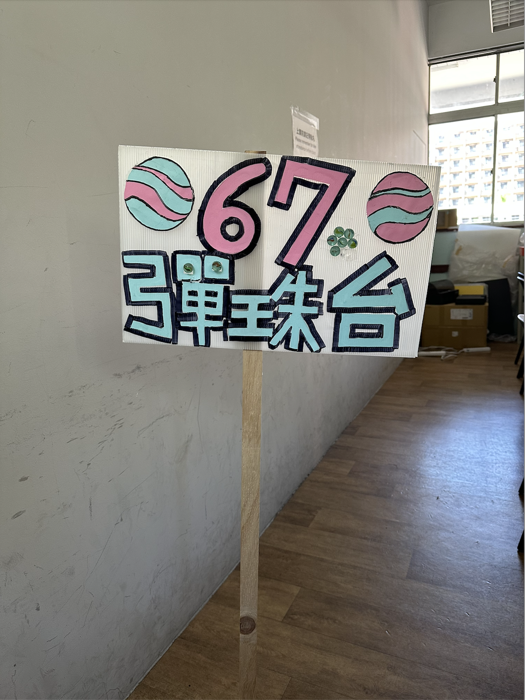
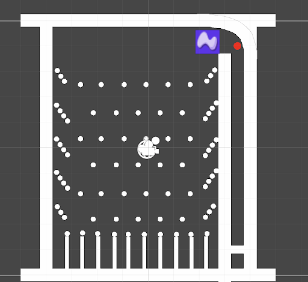
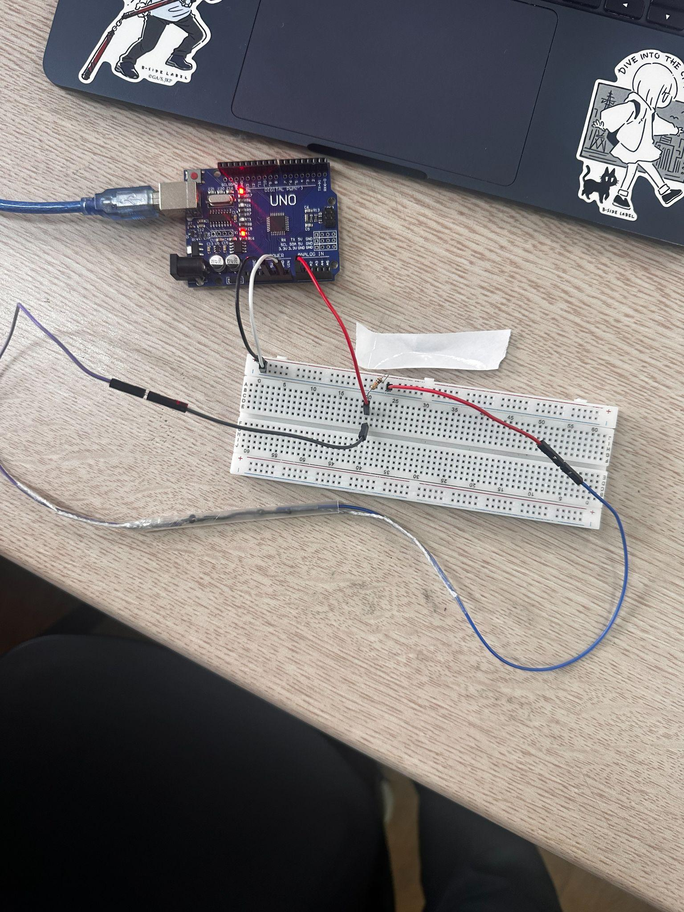

B組
組員：黃祈翔、吳婕語、石展成、李心恬｜組長：黃祈翔

這是一台模仿夜市彈珠台，並有一樣計分方式以倍率來獲得彈珠。
拉拉力感測器，會讓球在螢幕上可以在螢幕上呈現球會到哪格，如果有哪到得分區(有亮紅點的)就會看倍率計分
拉力感測器拉的力道會決定拉的大小，因為石墨可以決定電阻大小，並麵線有彈性，所以利用Arduino 接到 Unity上並且在Unity的物體都加入碰撞箱，就可以讓球不會穿模。
把拉力感測器接到Unity上（八月可完成）
預計要把彈珠台的計分方式加入進去 （一個禮拜）
把電線都焊接PCB板上（一到兩個禮拜）
Unity遊戲畫面

吳婕語、李心恬：招牌
拉力感測器
